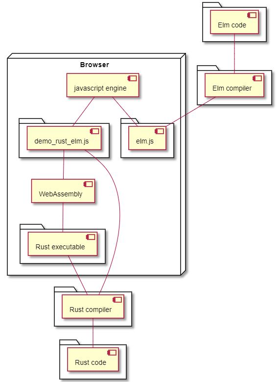
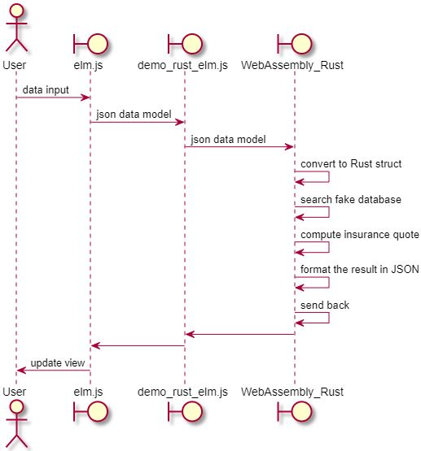

This demo leverages WebAssembly to run Rust compiled code. The view and controls are implemented using Elm language.
The Rust part is responsible of the insurance quote calculation, from the data captured out of the form.
To simulate a data base, the Rust code uses a match construct to get a base quote and then applies some coefficients based on the age and the driving experience years of the user.
The Elm part shows the user controls, captures data, sends it to Rust and shows the result.
